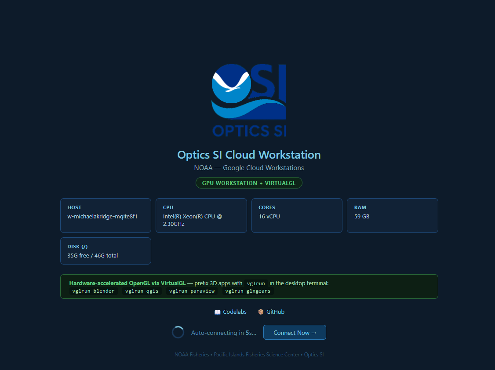
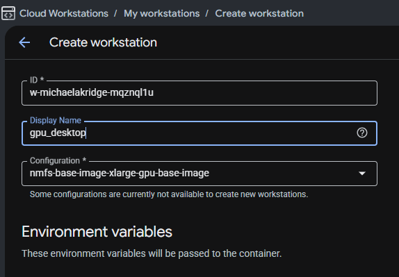
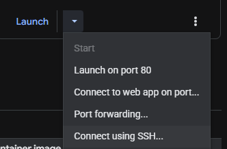
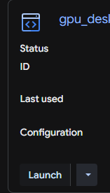

This codelab installs a persistent GPU-enabled desktop environment on a Google Cloud Workstation

Uses:
vglrun)When you create your Cloud Workstation, select a GPU-enabled base image/configuration.
nvidia-smi and vglrun acceleration will not be available.nvidia-smi.
Before running install commands, connect to the workstation with SSH from Cloud Workstations.
In the Cloud Workstations UI, open your workstation actions dropdown and use Connect using SSH... to copy the exact connect command for your workstation and paste in command terminal on local machine.

After connecting, continue with the download and install steps below.
Use wget to download the installer to your workstation:
cd ~
wget -O setup_desktop_gpu_persistent.sh \
https://raw.githubusercontent.com/MichaelAkridge-NOAA/optics-si-cloud-tools/main/scripts/setup_desktop_gpu_persistent.sh
chmod +x setup_desktop_gpu_persistent.sh
You should see executable permissions (for example: -rwxr-xr-x).
Run the script with sudo so system packages/services can be configured:
sudo ./setup_desktop_gpu_persistent.sh
The script installs and configures:
80If you prefer not to keep a local copy first:
curl -sL https://raw.githubusercontent.com/MichaelAkridge-NOAA/optics-si-cloud-tools/main/scripts/setup_desktop_gpu_persistent.sh | sudo bash
Check that desktop processes are up:
pgrep -fa 'Xvnc|Xtigervnc|websockify|startxfce4' || true
ss -ltn | grep ':80 ' || true
Check GPU tooling:
which vglrun || true
nvidia-smi || true
Once the installer finishes, go back to Cloud Workstations and click Launch to connect to the workstation.

80.vglrun.Example:
vglrun glxgears
You can also use:
vglrun blender
vglrun qgis
vglrun paraview
If the desktop page does not load immediately after restart:
sudo tail -n 120 /var/log/desktop-autostart.log